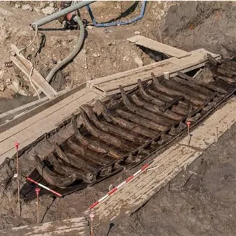

ven 20 nov · dalle 17:30
QR - Questioni di Restauro” - Il relitto di imbarcazione medievale del fiume Stella e il sito palafitticolo di Palù di Livenza: problematiche e potenzialità del restauro del legno imbibito archeologico
La Soprintendenza Archeologia, belle arti e paesaggio per il Friuli Venezia Giulia ha organizzato per i mesi di ottobre, novembre e dicembre un ciclo di incontri su tematiche riguardanti la tutela e il restauro. Il quarto incontro, che si svolgerà nella giornata di venerdì 20…
 Indicazioni
Indicazioni
- Costi e prenotazioni
- Costo non indicato · Prenotazione non indicata
- Programma
- Programma da verificare. Apri la fonte ufficiale per orari e possibili aggiornamenti.
- In caso di maltempo
- Nessuna indicazione specifica pubblicata.
- Note
- Acquisito automaticamente dalla fonte.
L’EVENTO
Descrizione completa
La Soprintendenza Archeologia, belle arti e paesaggio per il Friuli Venezia Giulia ha organizzato per i mesi di ottobre, novembre e dicembre un ciclo di incontri su tematiche riguardanti la tutela e il restauro . Il quarto incontro , che si svolgerà nella giornata di venerdì 20 novembre presso il salone d’onore di Palazzo Clabassi a Udine alle ore 17.30 , è dedicato al restauro del legno archeologico imbito e vedrà un ricco programma di interventi a cura di esperti del settore. Nel corso dell’incontro saranno presentate le problematiche archeologiche dello scavo dei resti organici nei contesti umidi e le connesse attività di restauro e conservazione di manufatti archeologici realizzate nel Friuli Venezia Giulia sotto la direzione scientifica della Soprintendenza. Questi contesti consentono, infatti, la conservazione eccezionale dei materiali organici , grazie alle particolari condizioni in cui i resti archeologici si preservano nei sedimenti umidi o nei limi palustri: assenza di ossigeno, luce limitata o assente e la prolungata imbibizione di acqua dei tessuti organici vegetali. Gli interventi di specialisti e tecnici del settore si concentreranno sulle attività promosse in relazione a due specifici contesti: il rinvenimento del relitto medievale del Fiume Stella e gli scavi archeologici presso il sito palafitticolo del Palù di Livenza , area umida che si estende nei Comuni di Caneva e Polcenigo nella Pedemontana pordenonese.
Ulteriori dettagli sul sito . Ingresso fino ad esaurimento posti | Capienza massima: 70 persone Per ulteriori informazioni:
sabap-fvg@cultura.gov.it
Tel: 0432 504559 / 0432 511056
IL PROGRAMMA
Programma e orari
Appuntamenti raccolti dalle fonti elencate. Dove manca un orario, non è ancora disponibile in questa scheda.
Programma pubblicato
- ore 17.30
INFORMAZIONI UTILI
Prima di partire
- Controllare la fonte prima di partire.
ORGANIZZAZIONE